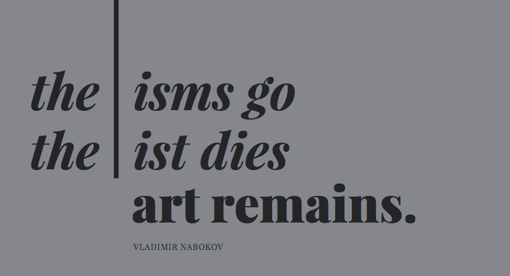

As you can see, I’ve changed the font on this site from Palatino Linotype. We were very comfortable together at first, however, after noticing many flaws, we decided to call it a day. Palatino Linotype looks lovely and bookish at first, but it has terrible curly quotes, and ultimately didn’t reflect the tone I wanted to convey by writing these posts. I wanted to try something a little more friendly, so I had a look at web fonts.
I’d already learned how to load in Google webfonts when I created my page to experiment with ems and root ems in the CSS. Loading in a Google webfont is a simple matter of loading in the stylesheet (which is provided by Google webfonts) and assigning the font-family of the elements that I wanted to apply it to. However, as I found out, there are more web fonts in life than just Google web fonts.
Before choosing the current web font, I had a sift through the Google Web fonts directory. I’ve spoken to many web developers and designers who have made it pretty clear that the selection isn’t particularly exciting. I found one rather beautiful site by Chad Mazzola on Hello Happy that utilises the best examples and combinations from the Google web font directoy, such as the above example in Playfair Display.
I eventually landed on Galdeano for my headlines and navigation, and Gudea for all other text. I chose this pairing because I wanted typography that was clear and friendly, which at first I thought this pairing was.
Once I’d got over the initial novelty of loading in web fonts, I realised I didn’t really like my choice very much. As Aral pointed out, I’d also managed to choose another font that had terrible curly quotes. This was a point where critique was important, something that Aral has encouraged throughout our lessons.
Aral drew my attention to the functional side of web fonts; what they were designed for and how they should be best used. He pointed out that the spaces (tracking) between letters was very large and made the text difficult to read. As the description reads, Gudea was designed for instructions and labels, and therefore the larger tracking helped when the font size was reduced. Galdeano also had flaws, such as the very symettrical dot (tittle) above the ‘i’, which didn’t match the asymmetrical design of the rest of the type. This left me in a bit of a muddle.
I asked two friends that are particularly ace at typography, Alice Ralph and Laura Kalbag, for their advice. I was pointed in the direction of TypeKit by Adobe which allows you to create a ‘kit’ of types to load in via a very simple js script. It makes it rather simple to search for fonts that would suit paragraphs and headlines, and it has a rather lovely selection. I’m currently using the free version until I invest in the portfolio, hence the teeny grey badge in the corner.
The font you see before you is called Adelle, which I found friendly, readable, and had a great amount of character which is what I originally set out to find. Through Twitter I was recommended Typecard, an app that takes you through different elements in typography in a rather delightful way. It also allows you to search for things too! I’d love to learn a lot more about typography, web fonts and design, so if you recommend any articles or books I should read, please email me, or say hello on Twitter or App.net!
As you may have noticed, last week I struggled with ems. Even after I’d got the hang of them, they still weren’t very simple to comprehend. This is where I was introduced to root ems, or rems in short.
Unlike ems, root ems are always relative to the root element’s font size. Whereas ems inherit their value from the context, the parent element, root ems always equal the same value. So if the html font-size is set at 16px, then a rem will always equal 16px, regardless of the context in which they are used in the html.
html
{
font-size: 10px;
}
body
{
font-size: 2rem; /* = 20px */
margin-left: 1rem; /* = 10px */
}
p
{
font-size: 4rem; /* = 40px */
margin: 8rem; /* = 80px */
}As demonstrated above, if the html font-size is set at 10px, the value of 1rem equals 10px. If the body sets the font-size at 2rem, the margins set within it are not relative to the parent element, but to the root, and therefore 1rem still remains at 10px. This also applies to any element within the body, such as the p element, which also inherits its value from the root, rather than the parent element, the body.
In a media query, things change a little. As the value of a rem is still determined by the root — the html — any elements set in a media query that change when a breakpoint is breached are still relative to the root. This doesn’t help when you want things to be larger, so you will have to set the root font-size in the html.
As you can see, this is pretty simple to grasp, however, as values become decimal it becomes quite difficult to visualise things and it still requires a bit of maths. For example, if your base font size is set at 16px, and your margin is set at 24px, you will have to work out what this is in rems by dividing 24px by 16px. This leaves you with 1.5rem. As you can imagine, when values are divided and numbers after the decimal point become longer, it become really hard to visualise your design, as not everyone is a genius with numbers (certainly not me).
Now, root ems are all well and good, however you can’t really visualise root ems easily. However, you can visualise pixels, so Aral introduced me to a new way of thinking about using root ems. Aral has written a really good post on pixel-parity rems over on his blog, which may explain this in a better way than I can!
Aral’s problems with visualising rems was echoed by Chris Jacob, who suggested a simple solution in his Elastic Pixels gist. What if 1rem was equal to 1px? If the base font size is set at 1px, then 1rem will equal 1px. So, rather than dividing values by the root which has a value larger than 1px — resulting in a lot of ridiculous decimal numbers — you can set the font size in the html to 1px. This means that to set a margin-left value that equals 500px, as the root font size set in the html is 1px, you only have to set the value as 500rems. This makes design a whole lot easier to visualise, as it’s much easier to imagine in pixels.
The one problem that both Aral and Chris Jacobs point out is that not all browsers support rems, such as IE8 and Opera Mini. I’ll have to ask Aral in my next solution how I would create a fallback option for this. I’ve already started searching for a good IE8 debug which will make my site look how it should, rather than Frankenstein’s Monster.
Jeg vil holde øje med en masse danske film i denne weekend. Hvis du har nogle anbefalinger, så lad mig det vide!
Return to the introduction!Copyright © 2013 Natalie D. Kane